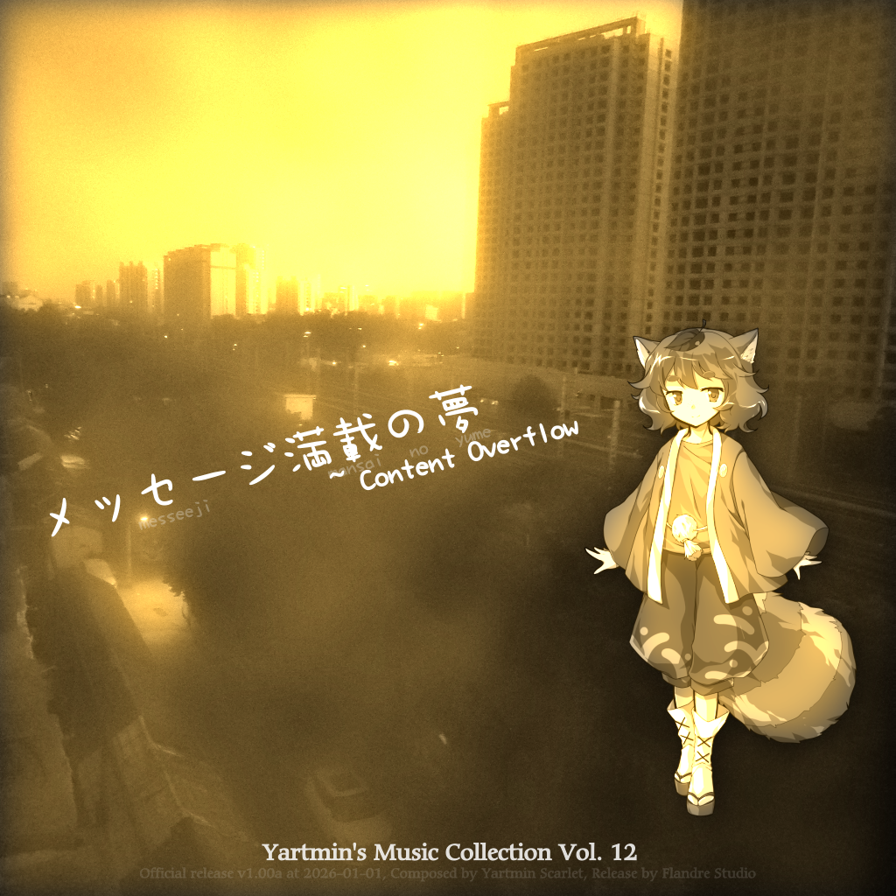
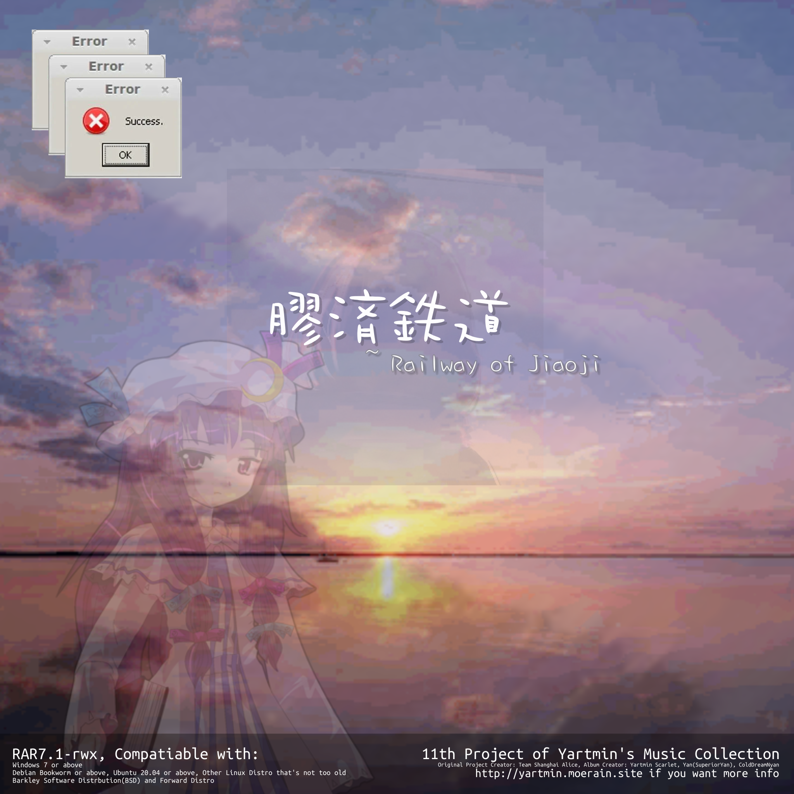
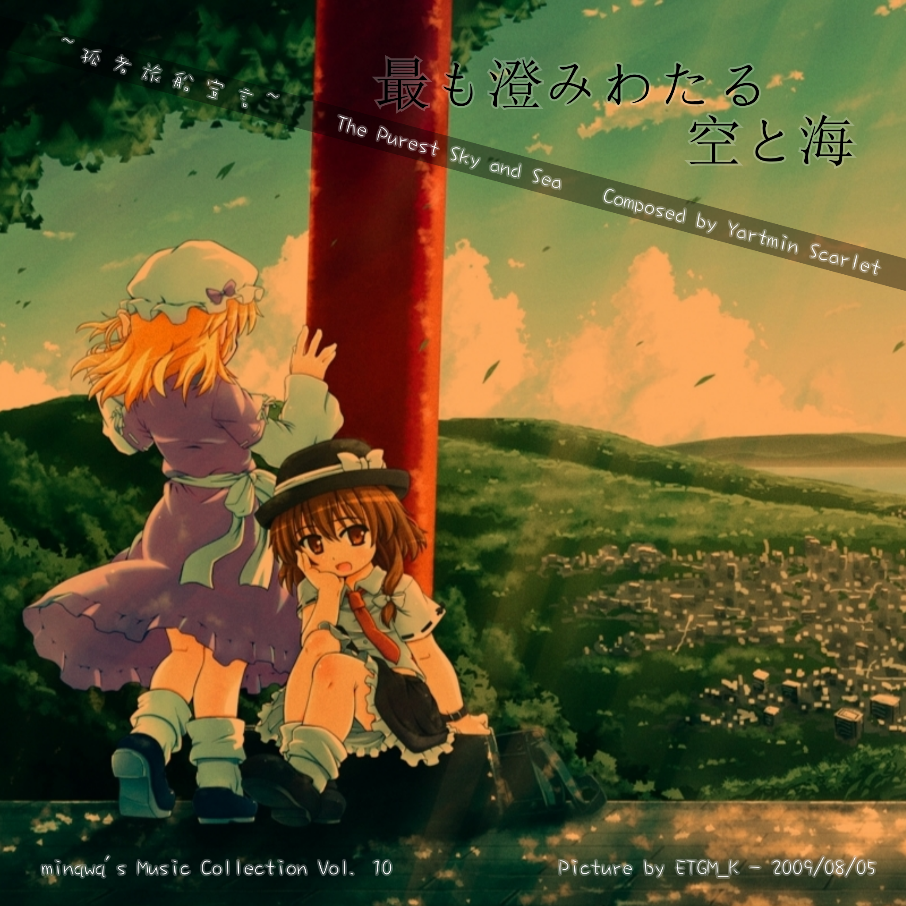
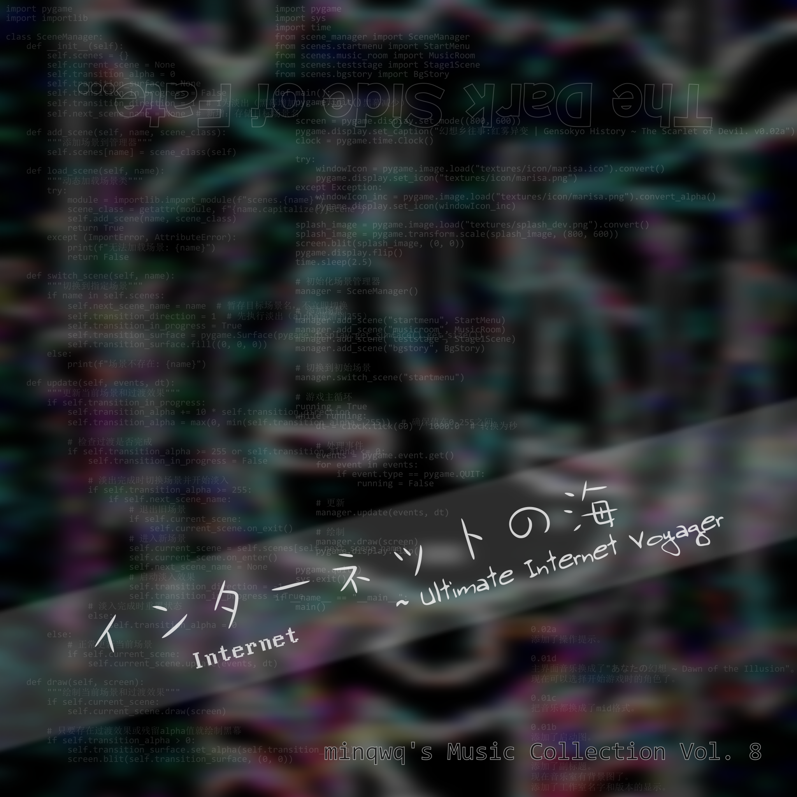
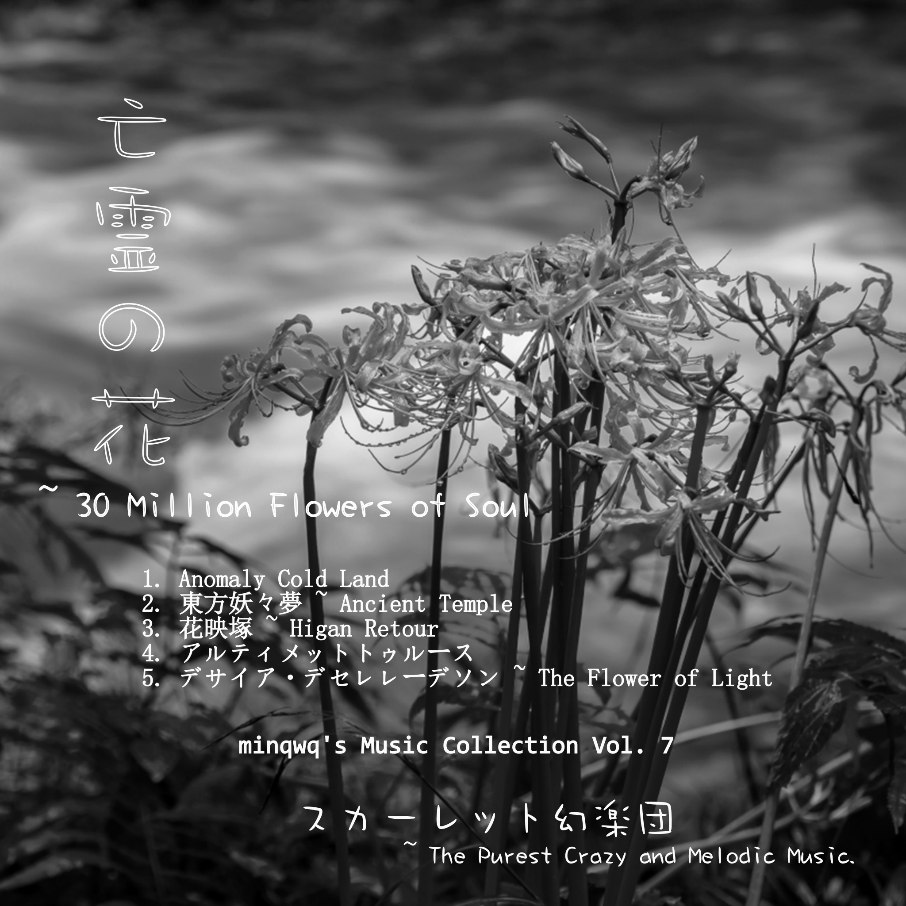
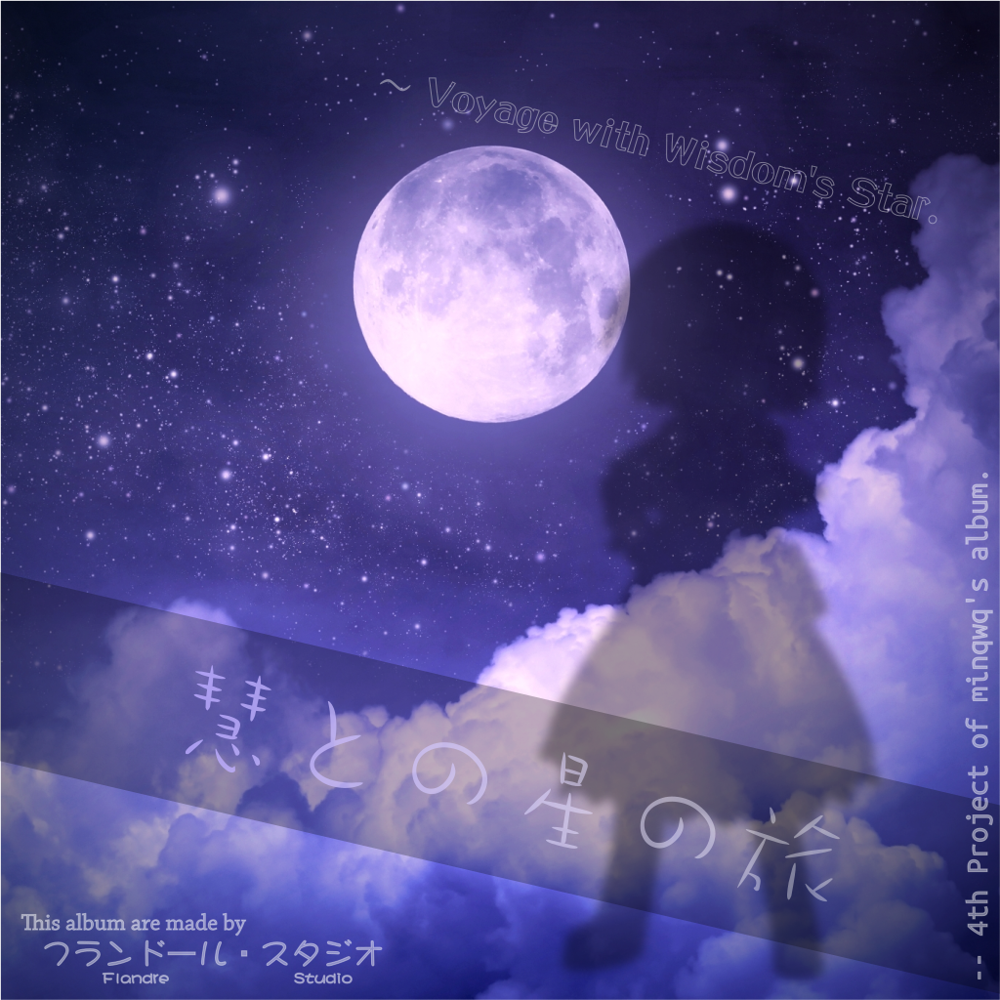
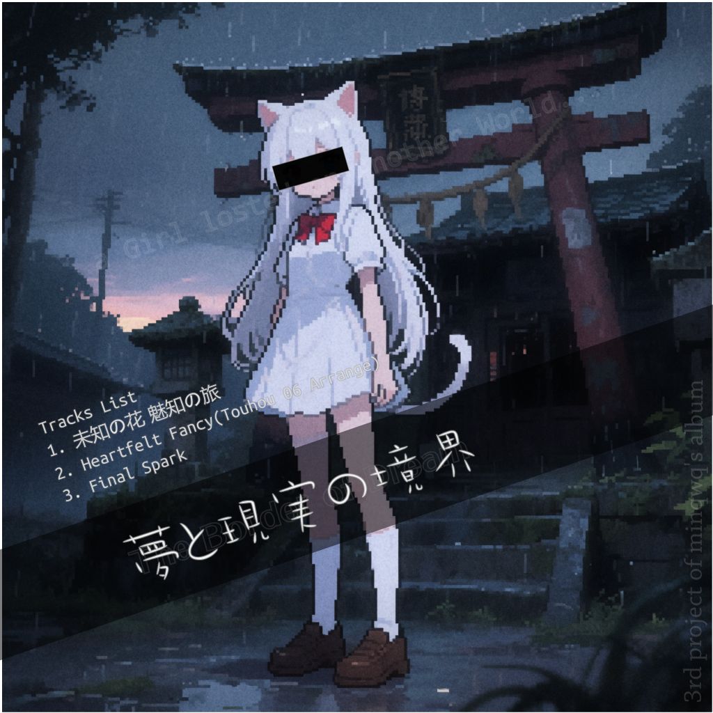
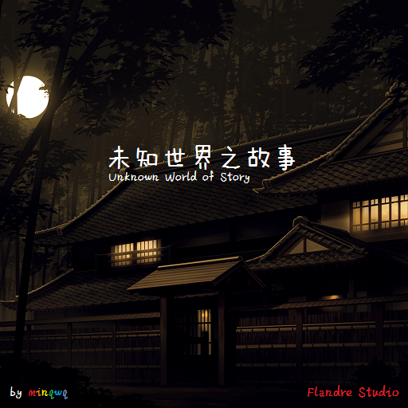

| 东方STG,FTG和一些其他类型官方游戏 | ZUN发布的音乐CD | ZUN风曲子三创 | 我自己的原创曲目 | 合作原创曲 | 别人的委托曲 |
| メッセージ満載の夢 ~ Content Overflow | |
|---|---|
|  | 一天夜里，她们的梦境互相连接了起来，并遇到了各种各样的奇怪的事情。 |
| 完成日期 | Track ID | 曲名 | 简短介绍 |
| 2025-12-02 | 1 | 幻想の地下大線路網 | 虹龙洞 Extra 面道中曲 |
| 2025-12-04 | 2 | どうせなら命を賭けて謎を解け ~ Travel Mix | 锦上京 3 面 Boss 曲 |
| 2025-12-18 | 3 | 雪月桜花の国 | 三月精 第 2 季附赠 CD2 第 2 轨 |
| 2025-12-14 | 4 | 鍵のかかった地下室 ~ Unstable Magician Girl | 红魔乡 Extra 面 Boss 曲 |
| 2025-12-16 | 5 | 春の湊に | 星莲船 1 面道中曲 |
| 2025-12-13 | 6 | ヴォヤージュ1969 ~ Trance Mix | 永夜抄 6 面道中曲 |
| 2025-12-28 | 7 | 後戸の国の静かな時間 | 专辑原创曲 |
| 2025-12-08 | 8 | 神話幻想 ~ Infinite Being ~ Cherry Blossom Mix | 怪绮谈 6 面 Boss 曲 |
| 2025-12-28 | 9 | セイクリッドフォレスト ~ Travel Mix | 锦上京 2 面道中曲 |
| 2025-12-26 | 10 | 廃れゆく産業遺構 ~ Travel Mix | 虹龙洞 4 面道中曲 |
| 2025-12-30 | 11 | 亡失のエモーション ~ Travel Mix | 心绮楼 秦心的曲子 |
| 2025-12-21 | 12 | ミラクルファンタズム | 专辑原创曲 |
| 2025-12-05 | 13 | 幻想郷を旅する ~ New Life of Aluda | 专辑原创曲 |
| 2025-12-18 | 14 | 白い旅人 | 天空璋 Staff 曲 |
| 膠済鉄道 ~ Railway of Jiaoji | |
|---|---|
|  | スカーレット幻楽団的富有情感与旋律的全新专辑！ |
| 完成日期 | Track ID | 曲名 | 简短介绍 |
| 2025-11-10 | 1 | 冬のRailway | 专辑原创曲 |
| 2025-11-29 | 2 | ファンタズムの旅 | 专辑原创曲 |
| 2025-11-14 | 3 | サンライズ ~ The Beginning of Today | 专辑原创曲 |
| 2025-11-24 | 4 | 淄博駅 ~ Awaiting The Train | 专辑原创曲 |
| 2025-11-12 | 5 | フォーカラーラビリンス | 锦上京 4 面道中曲 |
| 2025-11-25 | 6 | アイスブルーコウマ | 专辑原创曲 |
| 2025-11-25 | 7 | 幻想浄瑠璃 | 辉针城 4 面 Boss 曲 |
| 2025-11-24 | 8 | 终幕绝响 ~ 残狐落月 | 专辑原创曲 |
| 2025-11-24 | 9 | 禁じざるをえない遊戯 | 幻想乡 Extra 面道中曲 |
| 2025-11-20 | 10 | 愛すべき無限の空間 | 专辑原创曲 |
| 2025-11-24 | 11 | はっきりしない夢と現実 | 专辑原创曲 |
| 最も澄みわたる空と海 ~ The Purest Sky and Sea | |
|---|---|
|  | 在1900年，一个孤儿在一艘游轮上的富人区被发现---------- |
| 完成日期 | Track ID | 曲名 | 简短介绍 |
| 2025-10-26 | 1 | 少女秘封倶楽部 ~ Tanker Mix | 莲台野夜行 第 2 轨 |
| 2025-10-26 | 2 | 満月の竹林 ~ Piano Version | 辉针城 3 面道中曲 |
| 2025-10-26 | 3 | Frozen Styx | 专辑原创曲...吗？ |
| 2025-11-04 | 4 | 星の器 ~ Casket of Starry Blossom | 幻想乡 4 面 Boss 曲（魔理沙） |
| 2025-10-26 | 5 | 高く貴き富士の山(Harxtreme Saw remix) | 忘了，反正是最后一轨 |
| 2025-11-04 | 6 | スターリック・オーバーナイト・ステックス ~ Sky of The Space | 专辑原创曲 |
| 2025-11-04 | 7 | 空飛ぶ巫女の不思議な毎日 ~ 赤い霧 Ver. | 蓬莱人形 第 13 轨 |
| 2025-10-30 | 8 | Шредингера Katze | 燕石博物志 第 6 轨 |
| 2025-10-26 | (9) | 花は幻想のままに | 花映塚 ED 曲 |
| 2025-10-30 | 10 | さくらさくら ~ Japanize Dream... ~ 赤い霧 Ver. | 妖妖梦 Staff |
| 陰陽旅人 ~ Extend Overdrived Traveller | |
|---|---|
 | 冬日，两位少女的旅行之旅------ |
| 完成日期 | Track ID | 曲名 | 简短介绍 |
| 2025-10-05 | 1 | 妖々夢 ~ Snow or Cherry Petal | 妖妖梦 主界面曲 |
| 2025-10-05 | 2 | 今宵は飄逸なエゴイスト ~ Overdrived ~ | 凭依华 依神姐妹的曲子 |
| 2025-10-10 | 3 | ルナティック・アダム・バー ~ Legacy of Eastern History | 专辑原创曲 |
| 2025-10-15 | 4 | 聖徳伝説 ~ True Root Account(Touhou 06 Style Arr.) | 神灵庙 6 面 Boss 曲 |
| 2025-10-13 | 5 | ファンタズム・ラブ | 专辑原创曲 |
| 2025-10-20 | 6 | Extend オーバードライブ ~ The Cherry Blossom | 专辑原创曲 |
| 2025-10-12 | 7 | 永夜幻夢 ~ イターナル・オーバードライブの幻想少女(Remastered) | 专辑原创曲 |
| 2025-10-18 | 8 | 今夜は満月だ ~ Unsleppable Night | 专辑原创曲 |
| 2025-10-06 | 9 | 妖々跋扈 ~ Who done it! - Overdrived - | 妖妖梦 Phantasm 面道中曲 |
| 2025-10-20 | 10 | 不思議の国のアリス ~ Binary Mix | 怪绮谈 Extra 面道中曲 |
| 2025-10-20 | 11 | Traveller's Home ~ Starry Dream... | 专辑原创曲 |
| インターネットの海 ~ Ultimate Internet Voyager | |
|---|---|
|  | インターネットの海 ~ Ultimate Internet Voyager |
| 完成日期 | Track ID | 曲名 | 简短介绍 |
| 2025-10-01 | 1 | 夜だから眠れない | 东方三月精（第一季）附属CD 第 2 轨 |
| 2025-10-01 | 2 | 二つの世界 ~ Binary Mix | 东方三月精（第二季）附属CD3 第 2 轨 |
| 2025-09-27 | 3 | ツェペシュの幼き末裔 ~ Binary Mix | 红魔乡 6 面道中曲 |
| 2025-09-30 | 4 | 夢消失 ~ Lost Dream | 梦时空 卡娜的曲子 |
| 2025-09-26 | 5 | 空中に沈む輝針城 | 辉针城 5 面道中曲 |
| 2025-10-01 | 6 | Red City ~ Scarlet Incident | 专辑原创曲 |
| 2025-10-01 | 7 | 灰色旅人 ~ Dark Traveller | 专辑原创曲 |
| 亡霊の花 ~ 30 Million Flowers of Soul | |
|---|---|
|  | 这次的话，时间不是很充足，所以没有写乐评 |
| 完成日期 | Track ID | 曲名 | 简短介绍 |
| 2025-09-15 | 1 | Anomaly Cold Land | 专辑原创曲 |
| 2025-09-15 | 2 | 東方妖々夢 ~ Ancient Temple | 妖妖梦 5 面道中曲 |
| 2025-09-15 | 3 | 花映塚 ~ Higan Retour | 花映塚 标题曲 |
| 2025-09-15 | 4 | アルティメットトゥルース | 妖妖梦 6 面道中曲 |
| 2025-09-15 | 5 | デサイア・デセレレーデソン ~ The Flower of Light | 专辑原创曲 |
| 血と夜の夢 ~ Endless Bloody Phantasm | |
|---|---|
 | 血と夜の夢 ~ Endless Bloody Phantasm |
| 完成日期 | Track ID | 曲名 | 简短介绍 |
| 2025-09-03 | 1 | The Purest Sky and Sea | 卯酉東海道 第 11 轨 |
| 2025-09-03 | 2 | Faster than Fastest ~ Pause the World(EBP Arranged) | 花映塚 咲夜的曲子 |
| 2025-09-03 | 3 | 献納・永遠の命不滅の吸血姫 | 委托曲目，非专辑原创 |
| 2025-09-03 | 4 | Grinniz Truth ~ Cherry of Blossom | 妖妖梦 6 面道中曲 |
| 2025-09-03 | 5 | Fostar's Dream World ~ Eternal Dream(EBP Arranged) | 委托曲目，非专辑原创 |
| 2025-09-05 | 6 | ヴォヤージュ2038 | 专辑原创曲 |
| 2025-09-09 | 7 | どうせなら命を賭けて謎を解け(Harxtreme Saw remix) | 锦上京 3 面 Boss 曲 |
| 2025-09-09 | 8 | 冬雨のフォークロア ~ Full ver | 专辑原创曲 |
| 2025-09-09 | 9 | 妖妖跋扈 ~ Overdrived ~ | 妖妖梦 Extra 面道中曲 |
| 2025-09-12 | 10 | 無何有の郷 ~ Deep Mountain | 妖妖梦 1 面道中曲 |
| 2025-09-09 | 11 | お宇佐さまの素い幡 ~ Bloody Mix | 花映塚 因幡帝的曲子 |
| 2025-09-09 | 12 | 花は幻想のままに ~ Bloody Mix | 花映塚 ED 曲 |
| 慧との星の旅 ~ Voyage with Wisdom's Star | |
|---|---|
|  | 大家好，我是min。 |
| 完成日期 | Track ID | 曲名 | 简短介绍 |
| 2025-06-11 | 1 | Cinderella Cage ~ Kagome-Kagome(Touhou 06 Arrange) | 永夜抄 5 面道中曲 |
| 2025-06-11 | 2 | Voyage 1969 | 永夜抄 6 面道中曲 |
| 2025-06-11 | 3 | Hakurei ~ Eastern Wind | 封魔录 1 面道中曲 |
| 2025-06-11 | 4 | The Fantastic Tales from Tono(Touhou 06 Arrange) | 妖妖梦 2 面道中曲 |
| 2025-06-12 | 5 | Emotional Skyscraper ~ Cosmic Mind | 星莲船 6 面 Boss 曲 |
| 2025-06-11 | 6 | Fantasy Corridor(Dolls in Pseudo Paradise Arr.) | ZUN's Strange Works |
| 2025-06-12 | 7 | Kobito of the Shining Needle ~ Little Princess | 辉针城 6 面 Boss 曲 |
| 2025-06-14 | 8 | Last Remote(Touhou 06 Arrange) | 地灵殿 Extra 道中曲 |
| 2025-06-11 | 9 | Hourai Illusion ~ far East | ZUN's Strange Works |
| 夢と現実の境界 ~ The Border of Dream | |
|---|---|
|  | minqwq的，纯粹的，安静的，和富有旋律的音乐集第三弹！ |
| 完成日期 | Track ID | 曲名 | 简短介绍 |
| 2025-06-02 | 1 | 未知の花 魅知の旅 | 未知の花 魅知の旅 第 1 轨 |
| 2025-06-03 | 2 | Heartfelt Fancy(Touhou 06 Arrange) | 地灵殿 4 面道中曲 |
| 2025-06-01 | 3 | Final Spark | 专辑原创曲 |
| 未知世界之故事 ~ Unknown Old World of Story | |
|---|---|
|  | minqwq的，纯粹的，安静的，和黑暗与古怪的音乐集第一弹！ |
| 完成日期 | Track ID | 曲名 | 简短介绍 |
| 2025-04-25 | 1 | Final Story | 专辑原创曲 |
| 2025-05-04 | 2 | Hakurei Shrine in The Rain | 专辑原创曲 |
| 2025-04-30 | 3 | Voyage 1969 | 永夜抄 6 面道中曲 |
| 2025-04-30 | 4 | Finally... | 专辑原创曲 |
| 2025-05-04 | 5 | Scarlet Tower ~ Eastern Dream... | 红魔乡 Staff |
| 2025-05-03 | 6 | Ultimate Truth | 妖妖梦 6 面道中曲 |
| 2025-05-04 | 7 | Flandre's Pain | 红魔乡 Extra Boss 曲 |
| 2025-05-06 | 8 | Unstable Emotion | 专辑原创曲 |
| 2025-05-06 | (9) | Hakurei ~ Eastern Wind | 封魔录 1 面道中曲 |
| 2025-05-06 | 10 | Desire Drive | 神灵庙 4 面道中曲 |
| 2025-05-06 | 11 | The Posinous Love Potion | 专辑原创曲 |